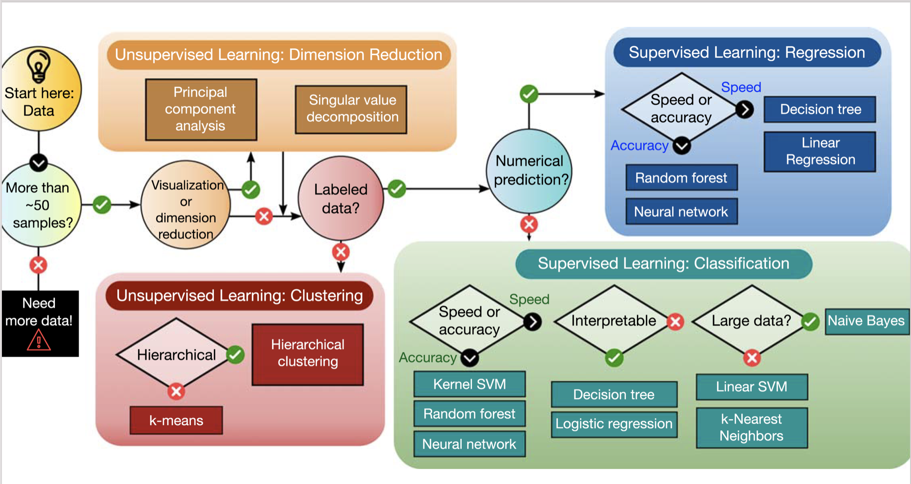

The main emphasis is to give you a short and pedestrian introduction to the whys and hows we can use Machine Learning methods to solve quantum mechanical many-body problems and how we can use such techniques in analysis of experiments. And why this could (or should) be of interest.
These slides are at https://mhjensenseminars.github.io/MachineLearningTalk/doc/pub/.
See also Artificial Intelligence and Machine Learning in Nuclear Physics, Amber Boehnlein et al., arXiv:2112.02309 and Reviews Modern of Physics, submitted. MSU co-authors are Deal Lee, Witek Nazarewicz, Peter Ostroumov, and MHJ


If you wish to have a critical read on AI/ML from a societal point of view, see Kate Crawford's recent text Atlas of AI
Here: with AI/ML we intend a collection of machine learning methods with an emphasis on statistical learning and data analysisAn important and emerging field is what has been dubbed as scientific ML, see the article by Deiana et al Applications and Techniques for Fast Machine Learning in Science, arXiv:2110.13041
The authors discuss applications and techniques for fast machine learning (ML) in science – the concept of integrating power ML methods into the real-time experimental data processing loop to accelerate scientific discovery. The report covers three main areas
Machine learning for data mining: Oftentimes, it is necessary to be able to accurately calculate observables that have not been measured, to supplement the existing databases. Nuclear density functional theory: Energy density functional calibration involving Bayesian optimization and NN ML. A promising avenue for ML applications is the emulation of DFT results. Nuclear properties with ML: Improving predictive power of nuclear models by emulating model residuals. Effective field theory and A-body systems: Truncation errors and low-energy coupling constant calibration, nucleon-nucleon scattering calculations, variational calculations with ANN for light nuclei, NN extrapolation of nuclear structure observables Nuclear shell model UQ: ML methods have been used to provide UQ of configuration interaction calculations. Low-energy nuclear reactions UQ: Bayesian optimization studies of the nucleon-nucleus optical potential, R-matrix analyses, and statistical spatial networks to study patterns in nuclear reaction networks. Neutron star properties and nuclear matter equation of state: constraining the equation of state by properties on neutron stars and selected properties of finite nuclei Experimental design: Bayesian ML provides a framework to maximize the success of on experiment based on the best information available on existing data, experimental conditions, and theoretical models.
Machine learning is an extremely rich field, in spite of its young age. The increases we have seen during the last three decades in computational capabilities have been followed by developments of methods and techniques for analyzing and handling large date sets, relying heavily on statistics, computer science and mathematics. The field is rather new and developing rapidly.
Popular software packages written in Python for ML are
and more. These are all freely available at their respective GitHub sites. They encompass communities of developers in the thousands or more. And the number of code developers and contributors keeps increasing.
Not all the algorithms and methods can be given a rigorous mathematical justification, opening up thereby for experimenting and trial and error and thereby exciting new developments.
A solid command of linear algebra, multivariate theory, probability theory, statistical data analysis, optimization algorithms, understanding errors and Monte Carlo methods is important in order to understand many of the various algorithms and methods.
Job market, a personal statement: A familiarity with ML is almost becoming a prerequisite for many of the most exciting employment opportunities. And add quantum computing and there you are!
The approaches to machine learning are many, but are often split into two main categories. In supervised learning we know the answer to a problem, and let the computer deduce the logic behind it. On the other hand, unsupervised learning is a method for finding patterns and relationship in data sets without any prior knowledge of the system. Some authours also operate with a third category, namely reinforcement learning. This is a paradigm of learning inspired by behavioural psychology, where learning is achieved by trial-and-error, solely from rewards and punishment.
Another way to categorize machine learning tasks is to consider the desired output of a system. Some of the most common tasks are:
The large amount of degrees of freedom pertain to both theory and experiment in nuclear physics. With increasingly complicated experiments that produce large amounts data, automated classification of events becomes increasingly important. Here, deep learning methods offer a plethora of interesting research avenues.
Almost every problem in ML and data science starts with the same ingredients:
We seek to minimize the function \( \mathcal{C} (\mathbf{x}, f(\mathbf{\alpha})) \) by finding the parameter values which minimize \( \mathcal{C} \). This leads to various minimization algorithms. It may surprise many, but at the heart of all machine learning algortihms there is an optimization problem.
An artificial neural network (NN), is a computational model that consists of layers of connected neurons, or nodes. It is supposed to mimic a biological nervous system by letting each neuron interact with other neurons by sending signals in the form of mathematical functions between layers. A wide variety of different NNs have been developed, but most of them consist of an input layer, an output layer and eventual layers in-between, called hidden layers. All layers can contain an arbitrary number of nodes, and each connection between two nodes is associated with a weight variable.

Two- and three-dimensional representations of two events from the Argon-46 experiment. Each row is one event in two projections, where the color intensity of each point indicates higher charge values recorded by the detector. The bottom row illustrates a carbon event with a large fraction of noise, while the top row shows a proton event almost free of noise. See Unsupervised Learning for Identifying Events in Active Target Experiments by Solli et al. for more detials.

The traditional Monte Carlo event selection process does not have a well-defined method to quantify the effectiveness of the event selection.
In addition, the selection task normally produces a binary result only, either a good or bad fit to the event of interest. A bad fit is then assumed to be a different event type, and is removed from the analysis.
In a broader perspective, an unsupervised classification algorithm would offer the possibility to discover rare events which may not be expected or are overlooked. These events would likely be filtered out using the traditional methods. From a practical point of view, compared to supervised learning, it also avoids the necessary labeling task of the learning set events, which is error prone and time consuming.
The \( \chi^2 \) approach used in the traditional analysis performed on the Argon-46 data is extremely expensive from a computational stand because it involves the simulation of thousands of tracks for each recorded event.
These events are in turn simulated for each iteration of the Monte Carlo fitting sequence. Even though the reaction of interest in the above experiment had the largest cross section (elastic scattering), the time spent on Monte Carlo fitting of all of the events produced in the experiment was the largest computational bottleneck in the analysis. In the case of an experiment where the reaction of interest would represent less than a few percent of the total cross section, this procedure would become highly inefficient and prohibitive. Adding to this the large amount of data produced in this experiment (with even larger data sets expected in future experiments), the analysis simply begs for more efficient analysis tools.
The computationally expensive fitting procedure would be applied to every event, instead of the few percent of the events that are of interest for the analysis. An unsupervised ML algorithm able to separate the data without a priori knowledge of the different types of events increases the efficiency of the analysis tremendously, and allows the downstream analysis to concentrate on the fitting efforts only on events of interest. In addition, the clustering allows for more exploration of the data, potentially enabling new discovery of unexpected reaction types.
Given a hamiltonian \( H \) and a trial wave function \( \Psi_T \), the variational principle states that the expectation value of \( \langle H \rangle \), defined through
$$ \langle E \rangle = \frac{\int d\boldsymbol{R}\Psi^{\ast}_T(\boldsymbol{R})H(\boldsymbol{R})\Psi_T(\boldsymbol{R})} {\int d\boldsymbol{R}\Psi^{\ast}_T(\boldsymbol{R})\Psi_T(\boldsymbol{R})}, $$is an upper bound to the ground state energy \( E_0 \) of the hamiltonian \( H \), that is
$$ E_0 \le \langle E \rangle. $$In general, the integrals involved in the calculation of various expectation values are multi-dimensional ones. Traditional integration methods such as the Gauss-Legendre will not be adequate for say the computation of the energy of a many-body system.
You can find the codes, in c++, for the simple two-electron case at the Github repository https://github.com/mhjensenseminars/MachineLearningTalk/tree/master/doc/Programs/MLcpp/src or in python at http://compphysics.github.io/ComputationalPhysics2/doc/LectureNotes/_build/html/boltzmannmachines.html
The trial wave function are based on the product of a Slater determinant with either only Hermitian polynomials or Gaussian orbitals, with and without a Pade-Jastrow factor (PJ).
Machine Learning and the Deuteron by Kebble and Rios and Variational Monte Carlo calculations of \( A\le 4 \) nuclei with an artificial neural-network correlator ansatz by Adams et al.
Adams et al: $$ \begin{align} H_{LO} &=-\sum_i \frac{{\vec{\nabla}_i^2}}{2m_N} +\sum_{i < j} {\left(C_1 + C_2\, \vec{\sigma_i}\cdot\vec{\sigma_j}\right) e^{-r_{ij}^2\Lambda^2 / 4 }} \nonumber\\ &+D_0 \sum_{i < j < k} \sum_{\text{cyc}} {e^{-\left(r_{ik}^2+r_{ij}^2\right)\Lambda^2/4}}\,, \label{_auto1} \end{align} $$where \( m_N \) is the mass of the nucleon, \( \vec{\sigma_i} \) is the Pauli matrix acting on nucleon \( i \), and \( \sum_{\text{cyc}} \) stands for the cyclic permutation of \( i \), \( j \), and \( k \). The low-energy constants \( C_1 \) and \( C_2 \) are fit to the deuteron binding energy and to the neutron-neutron scattering length
An appealing feature of the ANN ansatz is that it is more general than the more conventional product of two- and three-body spin-independent Jastrow functions
$$ \begin{align} |\Psi_V^J \rangle = \prod_{i < j < k} \Big( 1-\sum_{\text{cyc}} u(r_{ij}) u(r_{jk})\Big) \prod_{i < j} f(r_{ij}) | \Phi\rangle\,, \label{_auto2} \end{align} $$which is commonly used for nuclear Hamiltonians that do not contain tensor and spin-orbit terms. The above function is replaced by a four-layer Neural Network.

Need for Machine Learning and Uncertainty Quantification in nuclear physics theory. Good progress but much remains to be done.
To solve many complex problems in the field and facilitate discoveries, multidisciplinary efforts efforts are required involving scientists in nuclear physics, statistics, computational science, and applied math. The community needs to invest in relevant educational efforts.